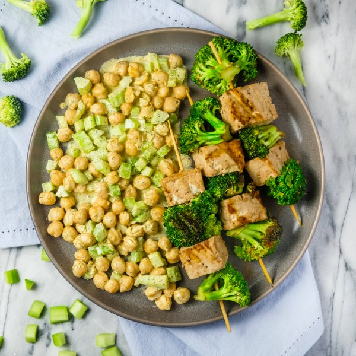

Grilled Tofu & Broccoli Skewers with Creamy Chickpea Salad

Nutrition (per serving)
599.4 kcalCalories
30 gProtein
41.5 gCarbs
38.2 gFat
Full nutrition table
| Calories | 599.4 kcal |
| Total fat | 38.2 g |
| Saturated fat | 5 g |
| Trans fat | 0.1 g |
| Cholesterol | 13.7 mg |
| Sodium | 392.1 mg |
| Carbohydrates | 41.5 g |
| Fiber | 12.1 g |
| Sugars | 4 g |
| Protein | 30 g |
| Potassium | 798.3 mg |
| Calcium | 425.5 mg |
| Iron | 5.8 mg |
| Vitamin A | 832.4 IU |
| Vitamin C | 79.3 mg |
| Vitamin D | 2.8 IU |
Cookware
Ingredients
- 2 crownsbroccoli
- 4 stickscelery
- 2 (12 oz) pkgsextra firm tofu
- 2 (15 oz) cansgarbanzo beans (chickpeas)
- black pepper
- curry powder
- Dijon mustard
- dill, dried
- extra virgin olive oil
- garlic powder
- mayonnaise
- salt
- soy sauce
- white wine vinegar
Steps
- If using wooden skewers, place 8-12 skewers in a shallow dish of water to soak until you are ready to use them.
- Cut tofu in half along the long side. Sandwich tofu between clean towels or paper towels and place on a baking sheet pan. Place a cutting board with something heavy on top and set aside to press out excess water.2 (12 oz) pkgs extra firm tofu
- Place mayo, Dijon, vinegar, and spices in a medium bowl. Whisk to combine the dressing.⅓ cup mayonnaise
2 tbsp Dijon mustard
4 tsp white wine vinegar
1 tsp dill, dried
½ tsp curry powder
½ tsp salt
¼ tsp black pepper - Wash, dry, and separate broccoli into bite-sized florets; small dice stems. Place florets in a large bowl and set aside for the skewers. Add stems to the bowl with the dressing.2 crowns broccoli
- Wash, dry, trim, and small dice celery. Add to the bowl with the dressing.4 sticks celery
- Drain and rinse chickpeas in a colander. Add to the bowl and stir to combine the chickpea salad. Set aside.2 (15 oz) cans garbanzo beans (chickpeas)
- Large dice tofu and add to the bowl with the broccoli florets. Drizzle with soy sauce and oil, then season with spices. Gently toss to coat.2 tbsp soy sauce
2 tbsp extra virgin olive oil
1 tsp garlic powder
1 tsp salt
½ tsp black pepper - Preheat a grill pan or regular skillet over medium-high heat.
- While the pan heats up, thread tofu and broccoli onto skewers, alternating ingredients, and place on a plate. (If you don't have skewers, you can cook the tofu and broccoli directly on the grill pan.)
- Once the pan is hot, working in batches if necessary, add skewers and cook, turning occasionally, until tofu is warmed through and broccoli is tender-crisp, 8-10 minutes. Remove from heat.
- To serve, divide chickpea salad and tofu-broccoli skewers between plates or bowls. Enjoy!